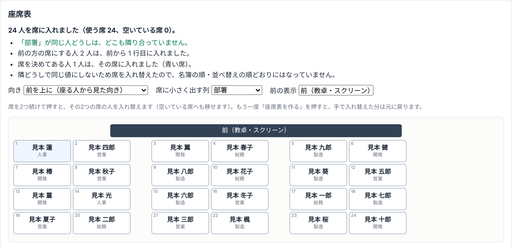

座席表の作成
会議・研修・試験会場・懇親会などの名簿から、座席表を作って A4 で印刷するツールです。机の並び（前から何行・横に何席・通路の位置、または島型）を決めると、名簿の順・並べ替え・ランダムで名前を入れます。席を決めてある人、前の方の席にしたい人、同じ部署・同じ学校の人を隣にしない、といった条件も入れられます。ソフトのインストールは不要で、いつものブラウザで動きます。
500円（税込・買い切り）
お試し版はすべての機能を使えて、座席表に入れる・印刷・保存は名簿の先頭20人までです。決済が終わると、そのまま製品版の画面に移動します。ブックマークしておけば何度でも使えます。

見本のデータ（架空の研修の参加者24人）で作った例。氏名は説明用のもので、実在の人とは関係ありません。
こんなときに
- 研修・会議の座席表を、Excel のセルに名前を1人ずつ打って作っている
- 同じ部署・同じ会社の人どうしが固まらないよう、座席を手で入れ替えている
- 試験・説明会の会場で、受付番号の順に席を割り当てて掲示したい
- 来賓・講師の席は決まっていて、残りの人だけ順番に並べたい
- 見え方・聞こえ方などの理由で、前の方の席にしたい人がいる
できること
- 机の並び：教室・スクール形式（前から何行・横に何席、1〜8席ごとの通路）と、島型（島の数と1つの島の席の数）。使わない席は「1, 6, 25-30」のように番号で指定できます
- 席番号の振り方：前の行から横へ、または左の列から縦へ（前→後ろ）
- 名前の入れ方：名簿の順、選んだ列での並べ替え（受付番号・社員番号は数の順）、ランダム（同じ番号なら同じ並びを作り直せます）
- 席を決めてある人：「席番号」の列に番号がある人はその席へ。同じ席を2人に決めている、使わない席を決めている、などは何行目かを表示します
- 前の方の席にする人：「○」「1」「はい」などが入っている人を前の行から先に座らせます
- 隣どうしで同じ値にしない：部署・学校・会社などの列を選ぶと、同じ値の人が左右に並ばないよう席を入れ替えます（前後の席も含められます。島型では同じ島に入れないようにします）。人数の多い値があって避けきれないときは、残った組の数と席を表示します
- 手で直せる：席を2つ続けて押すと、その2人を入れ替えます。空いている席へも移せます
- 向き：前を上（座る人から見た向き）と、前を下（前に立つ講師・試験監督から見た向き）を切り替えられます
- 印刷：座席表を A4 横・縦の1枚に収めて印刷（名前の長さに合わせて文字の大きさを自動で調整、部署などを小さく添えられます）。受付用の「席の一覧」（席番号順・名簿順・名前の文字の順）も印刷できます
- 保存：Excel（「座席表」と「席の一覧」の2シート）と、席の一覧の CSV。CSV（UTF-8・Shift_JIS）と Excel ファイル（.xlsx）を読め、Excel の表をコピーして貼り付けても使えます
できないこと（購入前にご確認ください）
- 円卓・コの字・劇場のような曲がった並びの図は作れません（行と列、または四角い島の並びだけです）。円卓の宴会は、島型の「1つの島の席」を人数に合わせて代わりに使えますが、図は四角になります
- 人の相性・役職の上下（上座・下座）の判断はしません。役職の順に並べたいときは、名簿に順番の列を作って「列で並べ替え」をお使いください
- 「隣どうしで同じ値にしない」は、必ず 0 組にできるとは限りません。残った組は画面に表示します
- 名札・席札の印刷はしません（名札・席札の一括印刷 をお使いください）。班に分けるだけなら 班分け・グループ分け の方が向いています
- スマートフォンでは操作しにくいため、パソコンでお使いください
Excel だけで作るなら
名簿の順にそのまま並べるだけなら、Excel の関数でも座席表を作れます。「名簿」シートの B2 から下に名前があり、別のシートの A3 から右下へ「横に6席」の座席表を作る例です。
- 座席表のシートの A3 に
=IFERROR(INDEX(名簿!$B$2:$B$200,(ROW()-ROW($A$3))*6+COLUMN()-COLUMN($A$3)+1)&"","")と入れます（6 は横の席の数） - A3 を横に F3 まで、さらに必要な行数だけ下へコピーします。前の行から横へ、名簿の順に名前が入ります（名簿が終わったところから先は空欄）
- ランダムにしたいときは、名簿に
=RAND()の列を作ってその列で並べ替えてから、座席表を見ます - 通路を入れたいときは、座席表の列の間に空の列を挟み、式の
COLUMN()の部分を通路の数だけ調整します
このツールが向いているのは、同じ部署の人を隣にしたくない、決めてある席や前の方の席の人がいる、通路や島型の並び、前に立つ人から見た向きの表や受付用の一覧も要る、といった関数だけでは手間のかかるときです。
よくある質問
| データはどこかに送られますか？ | 送られません。読み込み・割り当て・印刷・保存はすべてお使いのブラウザの中で行います。表題・前の表示・用紙・通路などの設定だけをブラウザに保存し、名簿の中身は保存しません。 |
|---|---|
| 五十音順に並べられますか？ | 漢字の名前から読みは分からないため、ふりがなの列があれば「列で並べ替え」でその列を選んでください。ひらがな・カタカナは五十音の順に並びます。 |
| 何人まで使えますか？ | 製品版は人数の制限はありません（前から60行・横に40席まで）。300人（15行×20席）をランダムに並べ、隣どうしで同じ値にしない条件をつけたときも、計算はすぐに終わりました（パソコンの性能によります）。人数が多いと1枚の紙では文字が小さくなります。 |
| 席が足りないときは？ | 入りきらない人の名前と人数を表示し、一覧では席番号を空欄にします。机の並びを増やしてから作り直してください。 |
安心してお使いいただくために
- 名簿はお使いのブラウザの中だけで処理し、サーバーには送信しません
- 動作環境：最新版の Chrome・Safari・Edge・Firefox（パソコン）
- 説明どおりに動かない場合は、ご購入から7日以内にご連絡いただければ返金します
名札・席札は 名札・席札の一括印刷、班分けは 班分け・グループ分け、名簿の重なりの点検は 名簿の重複チェック もあります。